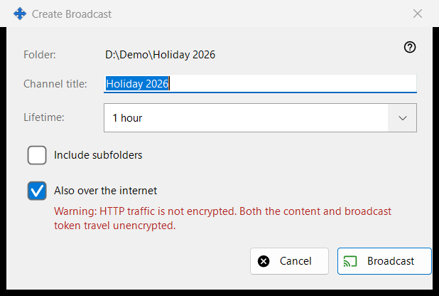
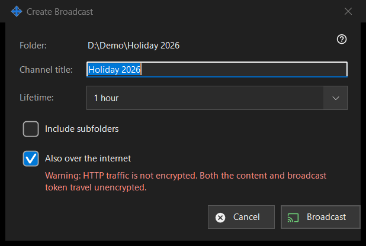

Create Broadcast
What this is for
Sets up one broadcast before it is made: its title, how long it lives and whether it reaches beyond the local network. It opens from 'Create broadcast..' in the Broadcasts window for the chosen file or folder. Nothing is created or sent until you press 'Broadcast'.


In this order
- Check the path in the first line (Folder: or File:).
- Edit 'Channel title:'; it starts as the folder or file name.
- Pick 'Lifetime:'.
- For a folder, tick 'Include subfolders' if you need them.
- Keep or clear 'Also over the internet'.
- Press 'Broadcast' (Enter) or 'Cancel' (Escape).
The elements
Title and lifetime
The channel title is what the broadcast list shows. Lifetime offers 24 hours (the default), 1 hour, 7 days and 'Until revoked', which has no end date and stays until you revoke it in the Broadcasts window.
Include subfolders
Shown only when the target is a folder, and off by default. It decides whether files in the subfolders of the broadcast folder are included.
Also over the internet
Ticked unless the sharing settings keep exports on the local network only. When ticked, the link also carries the IPv6 and port-forwarded internet addresses of this PC, if they are known, next to the local one. Ticking it moves the lifetime from 24 hours to 1 hour (you can change it back) and shows a red warning: HTTP traffic is not encrypted, so the content and the broadcast token travel unencrypted. Anyone who has the link can read the broadcast files until it expires or is revoked. Clear the box to keep the broadcast inside the local network.
Broadcast and Cancel
'Broadcast' only hands your choices back to the Broadcasts window, which then creates the broadcast and copies its link. 'Cancel' closes the dialog and creates nothing.
Manager settings · SFTP sharing settings · Exchange server settings